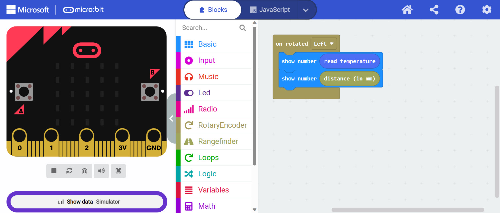
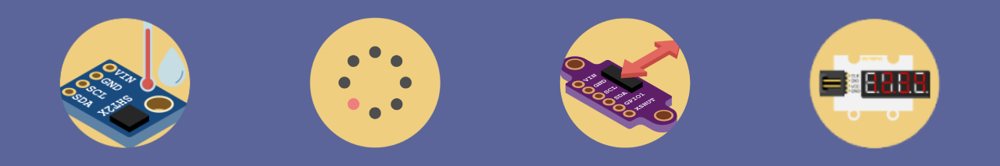

Back to Projects

During my internship at Tinkertanker Pte. Ltd., one of my tasks included the upgrading of the company's current published extensions for the BBC micro:bit for compatibility with the micro:bit v2. These extensions allow users of the MakeCode block editor to program the micro:bit for solutions involving specific sensors and actuators, that would otherwise require higher-level understanding of specific pins.
The particular extensions that I worked on are:
